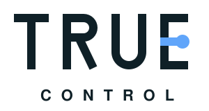

Secure and agile SCADA and MES programming by a software specialist who understands the underlying hardware. Partner with an independent system architect who builds digital solutions for the physical world.
Book a no-obligation consultationSoftware developer with a deep understanding of electrical engineering.
With 10 years of experience in programming and developing AVEVA SCADA and MES, I specialize in building the software that connects the factory floor to the business.
My technical journey started as an electrician before I studied electronic engineering and eventually fully dedicated myself to software development. This means I don't just write code based on a specification – I truly understand the signals and data I work with. I know what happens inside the PLC, and I know exactly how raw data is best translated into a robust, scalable top-level software architecture.
My great passion lies in coding intelligent machine integration. I have developed solutions for numerous companies to create transparency through precise OEE measurements. Additionally, I have extensive experience in programming and standardizing machine interfaces using PackML, making your future integrations significantly easier to handle in software.
I have worked for years developing for the pharmaceutical industry. This means that uncompromising quality, traceability, and stable uptime are integrated into my code. I am used to developing in environments where failure is not an option and where software must be verifiable (GAMP) from day one.
From raw machine data to business value. As an independent software specialist, I assist with the following core areas:
I design and code robust AVEVA solutions. From underlying databases, scripts, and architectural choices to user-friendly HMI screens. I build software that performs stably and is easy to maintain and expand.
I develop the software that extracts and processes the right data from your PLCs (regardless of brand) and translates it into intelligent OEE dashboards. Management gets the factual data presented clearly and flawlessly.
I code and implement the ISA-88 / PackML standard in your upper-level systems. This ensures uniform data structures in your software, regardless of who delivered the physical machine.
I deliver code prepared for GAMP validation from day one. This includes setting up audit trails, versioning, data security, and the necessary structural documentation.
Before you launch a major development project, I can perform a system analysis. I uncover technical pitfalls from the PLC layer up to the database and ERP system, delivering a clear requirement specification that minimizes your risk.
To ensure the code delivers exactly what the business needs, I use a proven 5-step project model – whether we are expanding an existing SCADA system or building a new MES solution from scratch:
I never start programming before the architecture is in place. We clarify your data needs, and you receive a clear, written task description and a price estimate.
Before I build the full solution, I ensure the data communication works. Can we read the correct tags from the PLC? I test the critical integrations early to eliminate technical risk.
Once the direction is set, I begin the actual programming. I work agilely, showing you HMI screens and dashboards continuously, allowing us to quickly adjust the user interface based on operator feedback.
New software must never cause unintended downtime. I always test the system thoroughly in an isolated environment (FAT) and am present during commissioning (SAT) to ensure a smooth transition to operation.
My work doesn't end the second the code goes live. After a short period, we evaluate together to ensure the software performs optimally, and that the system creates the expected value.